Evidência visual consolidada
Atleta Hib, antes e depois
Comparação direta da reformulação Web/PWA, onboarding e companion Android. Clique em qualquer imagem para abrir o arquivo original.
Onboarding · 390 px
Baseline reproduzido do commit 0ae9190; capturado após a edição, a partir do código-base imutável. Não é uma captura cronológica pré-edição.

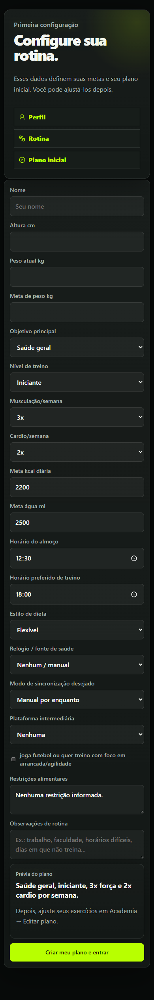

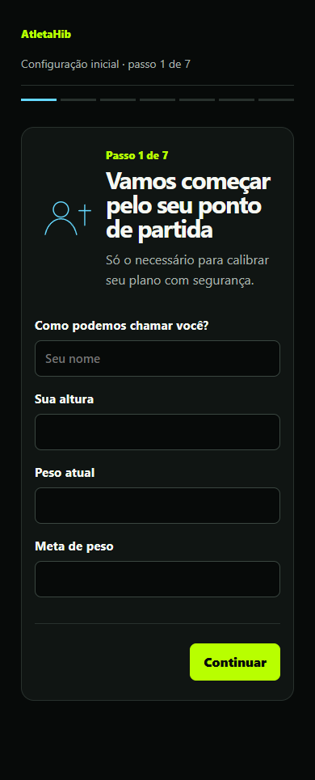
Hoje · 390 px
Hierarquia móvel simplificada sem retirar treino, prontidão, próximos passos ou navegação.

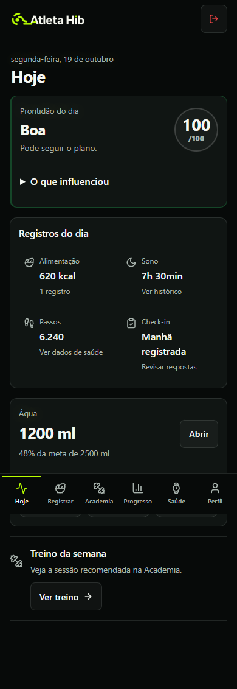

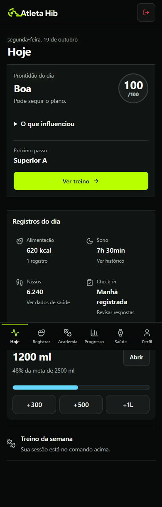
Hoje · 1440 px
A mesma arquitetura responsiva em desktop, com leitura mais editorial e menos aparência de painel SaaS.

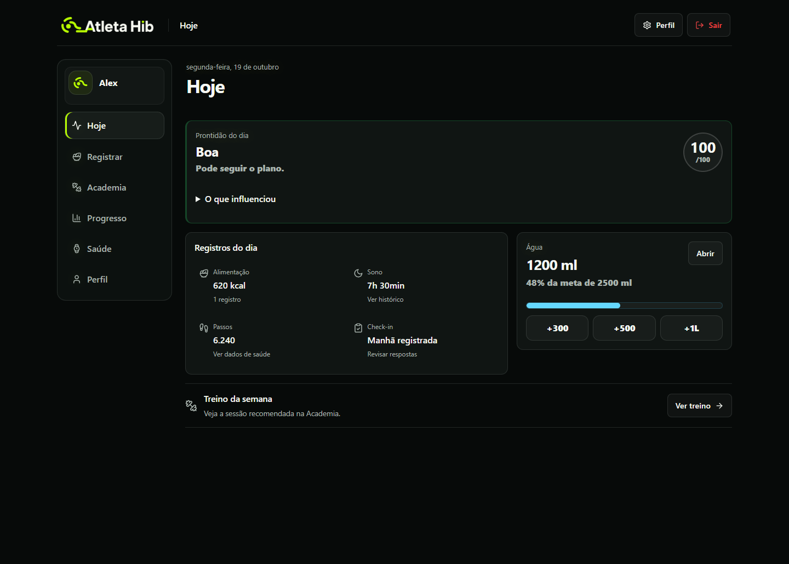

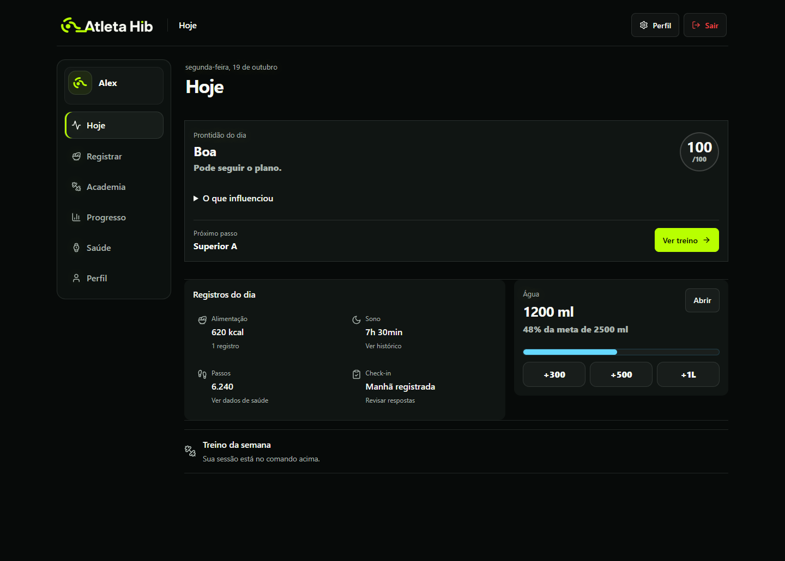
Atleta Hib Sync · Android
PNGs gerados pelo BridgeScreenTest com Robolectric native graphics. São evidência verdadeira do teste de UI, mas não representam emulador nem aparelho físico.
Login

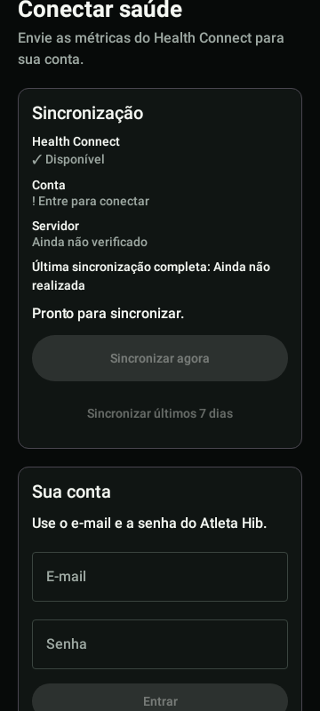

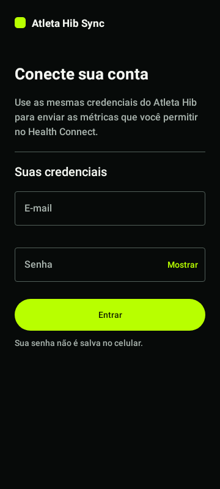
Health Connect conectado

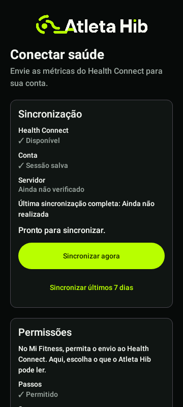

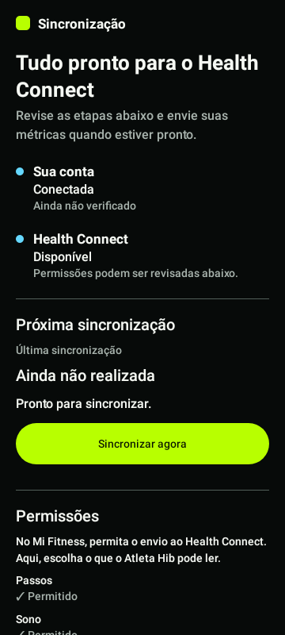
Identidade PWA · PNGs reais
Arquivos raster renderizáveis declarados pela aplicação. O Android usa recursos vetoriais/adaptativos; sem captura de launcher, eles permanecem prova de arquivo, não simulação visual.

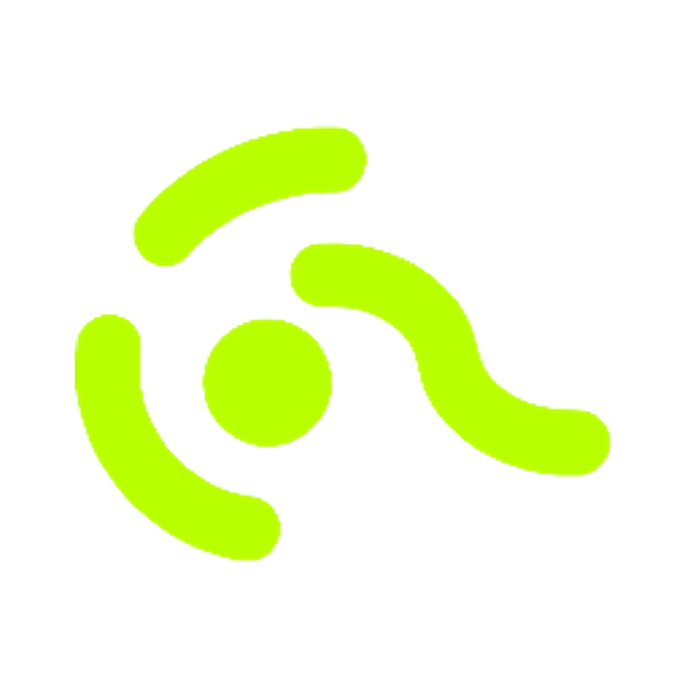

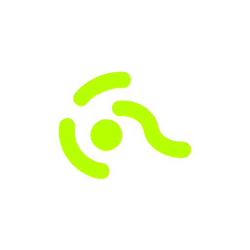

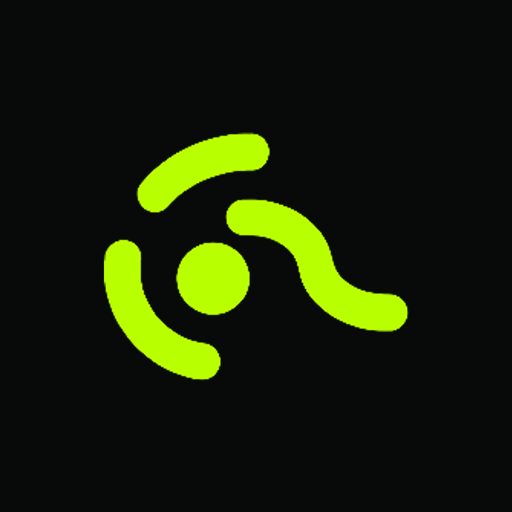

Validação e fronteiras
- PASS — cadastro, login, recuperação completa simulada e onboarding de sete etapas, incluindo voltar, corrigir, retomar por usuário e preservar respostas em erro.
- PASS — smoke recorrente sintético: 89 capturas, zero erros JavaScript; Academia carregada com quatro linhas e zero sobreposições em 360/390/412/1440.
- PASS — manifest/service worker e 10 verificações PWA estáticas; Web lint, tipos, 283 testes e build; Android unit, lint e assemble.
- NÃO EXECUTADO — interface nativa de instalação PWA; emulador Android; aparelho físico. Nenhum dado real ou backend vivo foi usado.